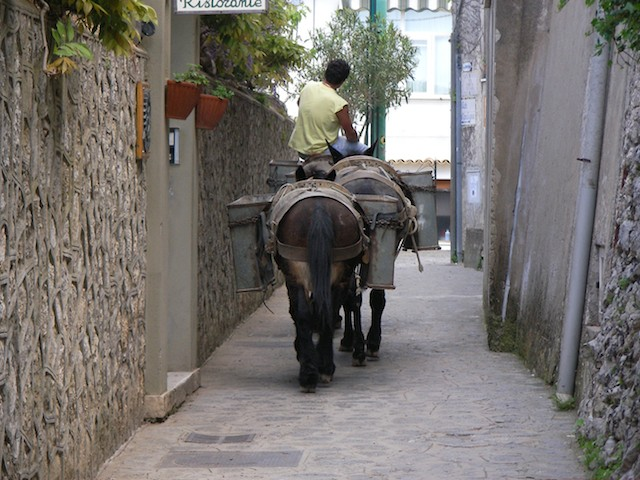

Gregg Kellogg
Index
Previous
82 of 91
Next
Rating: 4
Aperture: ƒ/3.8
Shutter Speed: 1/200
Exposure Bias: 0 ev
Focal Length (35mm): 138.0mm
Focal Length: 22.9mm
Caption: Ravello
Name: Italy 2006-05-05 115309AM
Date: 5/5/06 11:53:09 AM PDT
ISO: ISO 100
File Size: 1.26 MB
Project Path: Italy 2006
